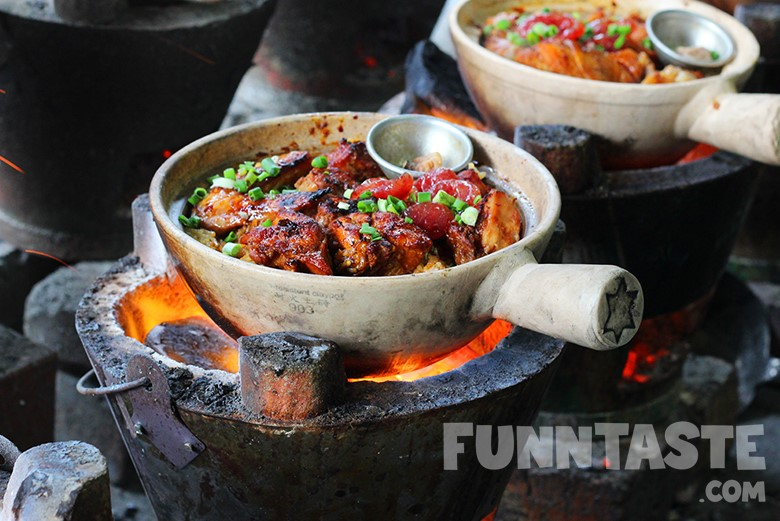

Cooking in claypots has a long history, dating back thousands of years ago — claypot dishes are traditionally prepared atop a charcoal stove to impart smoky flavours to it. Claypots are the equivalent of an electric slow cooker for people living in societies before the invention of modern kitchen appliances. Despite the fact that claypots are heavier and have a smaller volume as compared to electric cookers, they are still widely used today. Cooking in claypot elevates the taste of a dish because clay is a porous material that enables dishes to absorb the flavours of condiments and sauces more thoroughly — making it a good cooking method for dishes like claypot chicken rice and claypot noodles. Craving for a hearty and warm claypot rice dish? This one-pot claypot chicken rice dish is the ideal delicacy to be served at dinner parties, family meals and as a quick dinner on lazy days.
| 600g Chicken | 1 tbsp Sugar |
| 4 Dried Shiitake Mushrooms | 40g Ginger |
| 500g Rice | 700ml Water |
| 1 sprig Spring Onion | 1 Red chili |
| 1 tbsp Fried Shallots | 1 tsp MAGGI Concentrated Chicken Stock |
| 1 tsp MAGGI CukupRasa | 1 tbsp MAGGI Oyster Sauce |
| 2 tbsp MAGGI Concentrated Chicken Stock | |
Marinate chicken with 1 teaspoon MAGGI Homemade Chicken Stock, 1 teaspoon MAGGI CukupRasa, 1 tablespoon MAGGI Oyster sauce, sugar, ginger and shiitake mushroom (that had been soaked and cut into cube) for 1 hour.
Pour 700 ml water, 2 tablespoons MAGGI Homemade Chicken Stock and 500 gram rice in clay pot. Bring to boil.
Add in marinated chicken. Let is shimmer for 30 min.
When cooked, pour over 1 tablespoon dark soy sauce.
Garnish with Spring onion and serve.
| Energy | 337.43 kcal |
| Protein | 21.71 g |
| Carbohydrates | 54.58 g |
| Fats | 2.47 g |